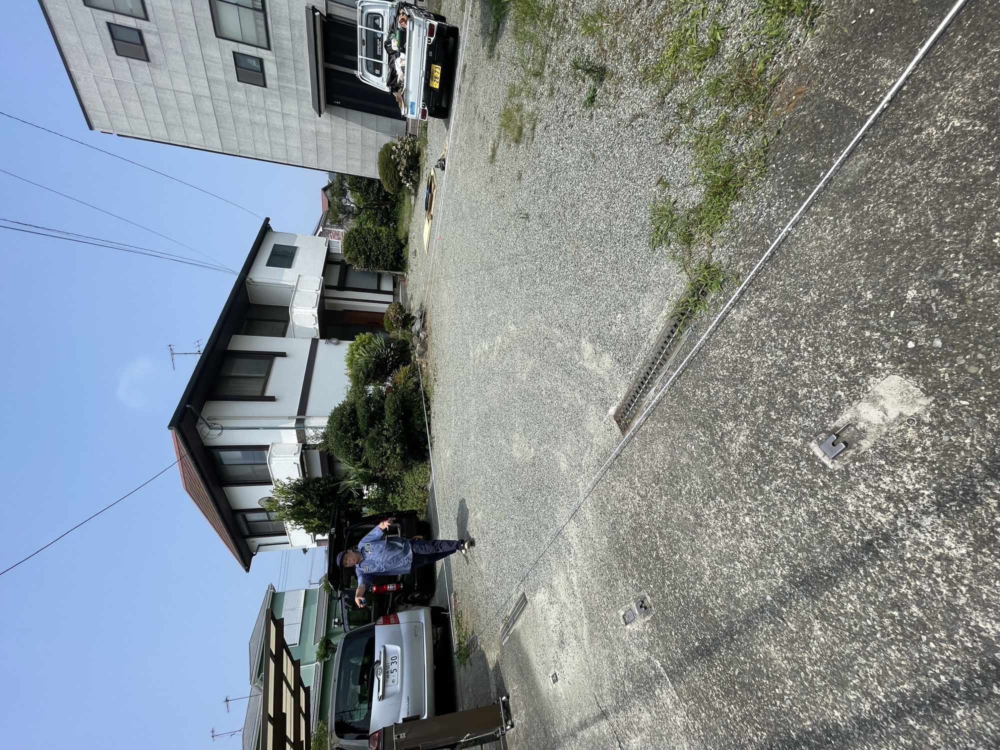

職人・大工
現場スタッフ
木造住宅、店舗、リフォーム、修繕、害獣対策、塗装など幅広い現場作業。未経験歓迎・見習いOK・経験者優遇。
見習い 日給11,000円〜 / 経験者 日給22,000〜25,000円以上可能
見習い 日給11,000円〜 / 経験者 日給22,000〜25,000円以上可能

うまくなくていい。まだ何者でもなくていい。技術も、自分のスタイルも、ここから身につければいい。
アートクラフターは設立6期目。言うなれば、まだ6歳の“小学生”みたいな会社です。
完成された会社じゃない。
だから、未来の形を選べる。
次の会社を、一緒につくろう。

代表自身、大工として25年以上現場に立っています。建築だけでなく、音楽、バイク、ファッション、カルチャーも好き。仕事の技術と同じくらい、人の個性や会話を大切にしています。
ただ働くだけではなく、その人らしさを持ったまま成長できる会社を目指しています。
経験ゼロでも構いません。不器用でも大丈夫。最初に必要なのは、技術ではありません。
ただ人数を増やす募集ではなく、これからのアートクラフターを背負う幹部候補との出会いを求めています。